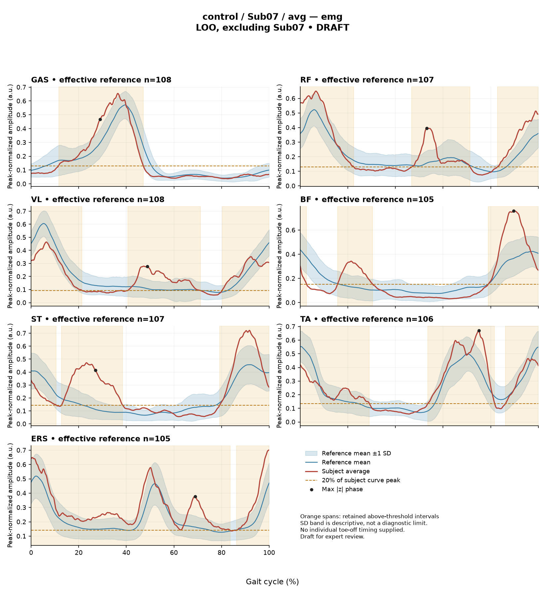

rater2 / Report 44 of 105 / Review spreadsheet row 45
R559B9390823DE92A
Case: control_Sub07_avg
Read this report independently. Record judgments in the workbook. Browser pages do not save ratings.
Report: exact saved text
# Gait Report Interpretation — Sub07 **Interpretation version:** limited-evidence-v3.1-candidate **Scope:** Research-level descriptive interpretation of supplied summary metrics. Not a diagnosis, not a treatment recommendation. --- ## 1. Objective Findings **Participant and group.** Sub07 is recorded in the **control (healthy-cohort) group**. No affected/paretic side applies, so the field "affected side" is *not applicable* rather than missing. Group membership is a dataset label based on cohort enrollment; it documents how this participant was classified and does not by itself establish that every physiological or motor-control parameter is normal. **Spatiotemporal data.** Gait speed and cadence are **not provided** in this input. The paretic/non-paretic step-length index used in this task is **not applicable** to a control participant (no paretic side is defined); this does not mean a general left/right step-length symmetry measure could not be computed from other fields, only that this particular index does not apply here. Because speed is not supplied, I cannot state whether this participant's self-selected speed falls inside or outside the healthy reference cohort's 0.80–1.79 m/s span, and no speed-based comparability statement can be made in either direction. **Fields outside this input.** Age, sex, individual gait events (including toe-off), stride-level data, raw-signal quality checks and expert plots are not part of this summary. Their absence here is an information boundary of this task; it must not be read as documented absence from the source release. **Reference used.** All deviation scores below are computed against **137 healthy subjects in a leave-one-out configuration excluding Sub07**, over 1001 phase points, from the main cohort Excel. The EMG z-statistics are referenced to the healthy EMG cohort (effective n ≈ 106–109 per muscle), which pools both body sides and all ages and is not age- or speed-matched. Even for a control participant, differences from this reference are differences from an empirical pooled average, not evidence of pathology, and this comparison cannot establish or exclude any disease effect. **Cycle definition.** All percentages refer to the analysis cycle defined from initial contact of the stride-defining limb (0%) to its next initial contact (100%), with left- and right-side strides averaged in the healthy release (an initial-contact-aligned pooled cycle). **No intermediate event or phase boundary is supplied.** I therefore report percentages of the cycle only, and do not assign stance, swing, loading response, mid-stance or pre-swing to any percentage. --- ## 2. EMG Envelope and Threshold Findings All EMG statements below are properties of the **ensemble-averaged envelope** for each muscle, normalized to a shared maximum across available strides (not per-stride rescaled) and thresholded at **20% of that curve's own peak**, with a **minimum retained interval of 3% of the cycle**. Amplitudes are relative envelope values — they are not force, strength or neural drive, and muscles cannot be ranked against each other on this basis. An averaged curve cannot show stride-to-stride variability, and the mean-curve pattern should not be assumed to repeat in every individual stride. **Detected above-threshold intervals and coverage (mean-envelope level):** | Muscle | Retained interval(s) | Coverage | Peak norm. amp. | Max \|z\| (location) | |---|---|---|---|---| | GAS | 12%–47% | 36% | 0.65 | 1.6 above reference, at 29% | | RF | 47%–71%; 83%–22% (wraps) | 64% | 0.65 | 2.8 above reference, at 53% | | VL | 41%–71%; 80%–21% (wraps) | 72% | 0.46 | 2.4 above reference, at 49% | | BF | 16%–30%; 79%–3% (wraps) | 39% | 0.76 | 2.7 above reference, at 90% | | ST | 13%–38%; 79%–10% (wraps) | 57% | 0.72 | 4.1 above reference, at 27% | | TA | 54%–82%; 86%–29% (wraps) | 71% | 0.67 | 2.0 above reference, at 75% | | ERS | 86%–84% (wraps) | 98% | 0.70 | 2.7 above reference, at 69% | **Boundary continuity.** RF, VL, BF, ST, TA and ERS each have a retained interval that **wraps the 100%→0% boundary**, i.e. the averaged envelope remains above its 20%-of-peak threshold across the cycle-defining initial-contact boundary of the contributing strides. This is a continuity property of the mean envelope at that boundary; it is not a physiological onset, offset, contraction duration, or a statement about any single stride. GAS is the only muscle with a single non-wrapping retained interval (12%–47%). **Coverage interpretation.** Coverage values state the proportion of the cycle in which the averaged envelope exceeded the muscle-specific threshold. Outside the retained intervals the criterion (threshold **and** ≥3% duration) was not met — this does not establish muscular inactivity or absence of physiological activity in those regions. For **ERS**, the single wrapping interval 86%–84% with 98% coverage does correspond to a short non-retained span in the vicinity of 84%–86%; given the displayed rounding I would describe this as a brief region where the criterion was not met rather than a precisely measured gap, and I would not claim the envelope is above threshold for the entire cycle. For every other muscle, a below-threshold region between the reported intervals follows directly from the interval endpoints, but its exact extent is limited by the displayed precision. **Amplitudes.** Peak normalized envelope amplitudes range from 0.46 (VL) to 0.76 (BF). Because normalization uses a shared per-participant, per-muscle maximum, these are internally scaled relative values; they support no cross-muscle strength ordering and no absolute activation claim. **Max |z| locations.** Each max |z| is the **largest standardized difference from the phase-specific reference mean across all 1001 points** — an extreme-value statistic. Its location marks where this curve differs most from the reference mean, **not** the time of peak envelope amplitude and not a gait event. "Above reference" means above the reference mean at that phase point, not above a healthy percentile limit. The conventional 2-SD rule does not apply: in this dataset every one of 109 healthy controls exceeds |z| = 2 on at least one muscle, and per-muscle healthy 95th percentiles for this statistic run from 3.65 (ERS) to 4.61 (TA), higher under leave-one-out. On that basis: - **TA (2.0)** and **ERS (2.7)** are below their respective supplied per-muscle 95th-percentile limits (4.61 and 3.65). - **GAS (1.6), RF (2.8), VL (2.4), BF (2.7), ST (4.1)** — the per-muscle 95th-percentile values for these specific muscles are **not supplied**; only the range endpoints are given. ST's 4.1 falls inside that 3.65–4.61 span, so whether it exceeds ST's own limit cannot be determined from this input, and I will not classify it. No value here is labelled abnormal, and none is assigned statistical significance. **Timing characterization.** Individual toe-off and matched muscle-specific normal timing references are not supplied. I therefore do **not** describe any interval as normal, early, delayed or prolonged, and do not map any interval to a functional role such as clearance, push-off or weight acceptance. Anatomical actions may be named descriptively (e.g. GAS as an ankle plantarflexor, TA as a dorsiflexor, RF/VL as knee extensors, BF/ST as knee flexors/hip extensors, ERS as an erector spinae channel), but no phase-function mapping is made. **Co-contraction indices (whole-cycle overlap of normalized envelopes; Falconer–Winter, 2×common area / summed areas):** - **TA vs GAS = 0.39**, equal to the supplied healthy median of 0.39 and inside the supplied 2.5th–97.5th percentile interval 0.24–0.59. - **RF vs BF = 0.57**, inside the supplied interval 0.48–0.83 and below the supplied median of 0.68; it sits nearer the lower endpoint than the upper. CCI here is a **whole-cycle index of envelope overlap**. It is not simultaneous activation time, not muscular force, and not a phase-specific result; it can be non-zero even where detected burst intervals do not overlap, because sub-threshold envelope area contributes. Values inside the supplied interval do **not** establish physiologically normal co-activation or normal muscle function, and values outside would not establish pathological co-activation, stiffness or impaired control. These indices depend on the normalization and envelope pipeline used here, so they should not be compared with values or thresholds from other studies or algorithms. --- ## 3. Kinematic and Reference Comparisons All joint values are **sagittal plane only**; coronal and transverse channels are not included, so no statement about frontal- or transverse-plane mechanics is possible. | Channel | Sagittal ROM | Gait Variable Score | |---|---|---| | Ankle | 21.7° | 3.10 | | Knee | 60.3° | 3.13 | | Hip | 43.0° | 2.15 | | Pelvis | 1.6° | 1.44 | **Composite (GPS-like) = 2.55**, the RMS of the four sagittal GVS values. This is *not* the validated 9-variable GPS. Against the supplied composite reference (median 5.1, 95th percentile 10.7), 2.55 lies below the median — that is, this participant's summed sagittal waveform difference from the leave-one-out reference is smaller than that of the typical reference subject. **What GVS/GPS-like can and cannot say.** Each GVS is a summary root-mean-square difference from the reference mean waveform across the cycle. It does **not** localize the difference in time, does not indicate the direction of the waveform offset (e.g. more flexed vs more extended), and does not identify which part of the cycle contributes. The low pelvis GVS (1.44) and the small pelvic sagittal ROM (1.6°) are separate quantities: ROM alone does not establish a clinical restriction or hypomobility without an appropriate matched comparison, and no ROM reference values are supplied in this input. The same applies to ankle, knee and hip ROM. **Comparability.** The kinematic comparison uses a leave-one-out reference of 137 healthy subjects excluding Sub07, which is the appropriate configuration for a cohort member and avoids self-inclusion bias. It nonetheless pools both sides and all ages and is not matched on age or walking speed (speed is not supplied for this participant). Deviations from — or agreement with — this reference are descriptive statements about distance from an empirical pooled average. They cannot establish a disease effect, a clinical diagnosis, or normal physiology, and pooled calibration percentiles must not be treated as matched leave-one-out normal limits for the EMG statistics in Section 2. --- ## 4. Questions for Further Clinical Assessment These are open questions raised by the limits of the supplied data. None presupposes that a mechanism, impairment or measurement problem has been observed, and none implies a treatment. 1. **Spatiotemporal context.** Can this participant's self-selected gait speed and cadence be retrieved from the release? Without them, comparability of this record to the reference cohort's speed span cannot be evaluated in either direction. 2. **Event data.** Are individual gait events (particularly toe-off) available for this participant? Access to them would permit event-anchored timing description of the envelope intervals, which the present percentage-only reporting cannot support. 3. **ERS near-continuous coverage.** Is there a question of whether the 98% ERS coverage reflects a genuinely sustained mean-envelope elevation, a low peak-to-baseline ratio in that channel (which raises coverage under a peak-relative threshold), or a signal-quality/baseline issue? Raw-signal quality checks were not part of this summary, so this cannot be resolved here. 4. **Threshold sensitivity.** Would the retained intervals and coverage values change materially under a different threshold fraction or minimum-duration rule? The reported intervals are properties of the 20%-of-peak / 3%-minimum criterion, not fixed physiological landmarks. 5. **Per-muscle reference limits.** Can the per-muscle healthy 95th-percentile max-|z| values (and their leave-one-out equivalents) be obtained for GAS, RF, VL, BF and especially ST? Only the range endpoints were supplied, which prevents any classification of the ST value of 4.1. 6. **Stride-level data.** Are individual-stride envelopes available? The averaged curve cannot address stride-to-stride consistency, and any question about variability requires stride-level data. 7. **Out-of-plane kinematics.** Are coronal and transverse channels available for this participant? The present composite is sagittal-only and cannot represent out-of-plane mechanics. 8. **Pelvic sagittal ROM.** Is an appropriate matched reference distribution for sagittal pelvic ROM available for comparison? The 1.6° value cannot be characterized as restricted or typical on this input alone. --- *All statements above are descriptive summaries of the supplied averaged-curve metrics and their stated reference comparisons. No diagnosis, severity grade, statistical significance, or treatment implication is asserted or implied.*
Requirements for this report
Fill the corresponding Coverage rows in the workbook. G03 is included once. These are the approved requirements, not prefilled judgments.
| Excel row | ID | Required content | Components / optional content |
|---|---|---|---|
| 227 | R157 | Convey EITHER (A) GPS-like 2.55 as a composite sagittal difference from the reference OR (B) knee AND ankle as relatively larger joint-curve differences OR (C) that the four supplied sagittal GVS values span approximately 1.44-3.13 degrees. One complete route suffices. | Route A: supplied composite value AND reference-relative metric meaning. Route B: both named joints AND relative prominence; exact joint values optional. Route C: the four-channel GVS scope AND approximate lower/upper values; a normative smallness label and a list of every joint value are not required. No route establishes normal gait. |
| 228 | R158 | Describe ST envelope above its phase-specific reference mean at approximately 27% of the analysis cycle (displayed max |z| 4.1). Within each route, muscle identity AND mean-relative direction AND approximate cycle location are required. Exact max-|z| repetition is optional. | Required for each route: muscle identity AND direction relative to the phase-specific reference mean AND approximate cycle location. Optional: exact max |z| value, comparison with the supplied endpoint span (descriptive only). Prohibited: percentile classification, gait phase, physiological onset, severity. Healthy provenance does not make the finding normal, and the finding does not make the participant abnormal. |
| 229 | A005 | Identify the participant as a healthy control AND state that the leave-one-out comparison excludes this participant. IF speed is discussed, state it was not supplied; IF cadence is discussed, state it was not supplied; IF the task-specific paretic/non-paretic step-length index is discussed, state it is not applicable. Each branch is triggered only by that domain. Exact reference count 137 is optional. | AND: healthy-control provenance AND self-exclusion from the leave-one-out reference. Conditional, per domain: speed not supplied; cadence not supplied; task-specific paretic/non-paretic index not applicable. Optional: count 137. G03 applies separately once. A correct core with one missing AND component is partial. |
| 230 | G03 | Express a meaningful limitation of reference comparability AND why the comparison cannot establish disease effects or clinical diagnosis; for controls it cannot establish disease or overall normality. One statement may also support a case requirement. | AND: comparability and inference limitations |
Exact model input: system instruction
Draft a research gait-report interpretation for a physical therapist or physiatrist using only the supplied quantitative summary. This is a limited-evidence interpretation task, not diagnosis or treatment selection. Rules: - Describe the participant's actual group and side, available findings, and missing channels accurately. Healthy-group membership does not prove normal physiology; deviations from an empirical reference do not by themselves establish disease. - Treat detected EMG intervals and coverage as properties of an averaged envelope under the stated threshold and duration rule. Do not convert them into physiological onset, offset, duration, continuous contraction, or inactivity outside the intervals. You may describe reported coverage, retained intervals and boundary continuity at the mean-envelope level. Do not infer the same pattern in every individual stride. Say no below-threshold segment only when the supplied evidence establishes that; a rounded coverage value or no retained interval alone does not establish it. - Individual toe-off and matched muscle-specific timing references are not supplied in this task. Use percentages of the analysis cycle. When the input explicitly identifies an initial-contact boundary, you may name that boundary or describe numerical proximity to it. Do not assign stance/swing, loading response, pre-swing, mid-stance or another event to a percentage, or substitute a conventional 60% split. Anatomical muscle actions may be named, but do not map an interval to a gait-phase function such as clearance, push-off or weight acceptance. Do not characterize timing as normal, early, delayed or prolonged without the required evidence. - Respect the supplied normalization method. Relative envelope amplitude is not strength or force, and average curves do not establish stride-to-stride variability. - Report CCI as a whole-cycle overlap index of normalized EMG envelopes. You may compare it with the supplied empirical interval or a supplied median, including proximity to an endpoint. Do not invent an unavailable median. Being within that interval does not establish physiologically normal co-activation or normal muscle function; being outside it does not establish pathological co-activation, stiffness, impaired control or a diagnosis. CCI is not simultaneous activation time, muscular force or a phase-specific result. It depends on normalization and envelope methods; do not transfer values or thresholds from other studies or algorithms. - Describe GVS and GPS-like as summary differences from the stated reference. Neither localizes waveform direction or phase; ROM alone does not establish a clinical restriction without an appropriate comparison. Do not treat pooled calibration percentiles as matched leave-one-out normal limits. - Where using a reference comparison, convey both limited comparability and the inability to establish a disease effect or clinical diagnosis from that comparison. One clear explanation per report is enough; age and speed need not be recited as separate checklist words. A speed inside an overall range does not prove that an appropriate matched reference exists. Apply these limits to controls as well. - The location of maximum |z| is the largest standardized difference from the reference, not necessarily the time of peak envelope amplitude or a gait event. Above/below reference in an EMG row means relative to the phase-specific reference mean at that location, not relative to a healthy percentile limit. - Preserve numerical direction and the displayed precision. Do not invent values, clinical severity grades, statistical significance, or unavailable reference values. Descriptive comparisons with supplied values remain allowed. Near-boundary rounded values do not justify classifying hidden unrounded values. - Clinical follow-up questions may ask whether a mechanism or measurement issue exists; do not presuppose it has already been observed. Do not recommend treatment. If EMG is unavailable, section 2 may simply state that envelope timing, amplitude and CCI cannot be assessed. Reference-only plots do not provide patient EMG. Use exactly these four sections: 1. Objective Findings 2. EMG Envelope and Threshold Findings 3. Kinematic and Reference Comparisons 4. Questions for Further Clinical Assessment
Exact model input: case summary
Candidate interpretation version: limited-evidence-v3.1-candidate
Draft the four-section report using only this subject's supplied evidence.
Metric definitions (read before interpreting any number below):
- All joint angles and ROM values are SAGITTAL PLANE only. Coronal/transverse data are not included.
- The released EMG curves are ensemble-averaged envelopes. For each participant and recorded muscle, normalization uses a shared maximum across the available strides before averaging; individual strides are not independently rescaled to their own peaks. This pipeline uses the released mean curves without further amplitude normalization. For healthy controls, the normalization and left/right stride pooling account comes from the release documentation. Healthy MAT aggregation and side-specific denominators were not numerically verified by the stroke audit. Amplitudes are relative envelope values, not absolute neural activation, force, or strength. Do not rank muscles as stronger or weaker from these amplitudes, or infer stride-to-stride variability from an average curve.
- Above-threshold intervals are the regions where the averaged envelope exceeds 20% of that curve's own peak, minimum retained interval 3% of the cycle (by sample count). An interval written as (X%-Y%) with X > Y wraps across the 100%->0% cycle boundary (envelope remains above threshold across the cycle-defining event). An onset of 0% is the analysis-window boundary, not necessarily a physiological onset. "No interval detected" means no region met the threshold + duration criteria; it does NOT mean the muscle is inactive or non-functional.
- CCI is the Falconer-Winter co-contraction index computed on the full continuous envelopes (2*common area / summed areas), so it can be non-zero even when the DETECTED burst intervals of the pair do not overlap (sub-threshold activity contributes).
- The composite kinematic deviation score is the RMS of the per-joint Gait Variable Scores over the sagittal channels provided ("GPS-like", not the validated 9-variable GPS).
- The paretic/non-paretic step-length index used in this task is not applicable to controls. This does not imply that a general left/right step-length symmetry measure cannot be defined.
- "Max |z| deviation" is the LARGEST absolute z-score across all 1001 phase points of the cycle, comparing this curve to the healthy-cohort mean/SD at each phase. This is an extreme-value statistic, NOT a single-observation z-score: in this dataset every one of 109 healthy controls exceeds |z| = 2 on at least one muscle, and per-muscle healthy 95th percentiles for this statistic run 3.65 (ERS) to 4.61 (TA) -- higher still under leave-one-out. Do not label a value abnormal by the conventional 2-SD rule; use the healthy reference range given per muscle where provided.
- Healthy-cohort CCI reference (this dataset): RF-vs-BF median 0.68 (2.5th-97.5th pct 0.48-0.83); TA-vs-GAS median 0.39 (0.24-0.59). Composite score reference: median 5.1, 95th percentile 10.7.
- COHORT BACKGROUND (calibration context, not necessarily the exact reference used for this subject -- the actual reference composition is stated in a dedicated line with the subject data below): the full healthy cohort is 138 subjects for kinematics, effective n = 106-109 per muscle for EMG (29 controls have no usable EMG; completeness varies by age), pooling both body sides and all ages; it is not age- or speed-matched to this subject. A leave-one-out run uses one subject fewer than these counts.
- SPEED SUPPORT LIMIT (applies to most stroke subjects in this dataset): the healthy reference cohort's self-selected walking speeds span 0.80-1.79 m/s. If this subject's gait speed is below 0.80 m/s, NO speed-matched healthy reference exists in this dataset -- 41 of the 50 stroke subjects are below that floor. Deviations from the reference then conflate slow-walking effects with stroke-specific control changes, and the two cannot be separated from these data. Describe deviations from the reference as such; do not attribute them wholly to stroke pathology.
- Additional source fields are outside this input. Age, sex and gait events may be available in the release; time post-stroke, stroke clinical scores and a non-paretic-side designation apply only to the stroke cohort, as applicable. Do not claim every listed field exists for every participant. Distinguish not supplied, not applicable and documented absent recordings.
The release dictionary defines contributing strides from initial contact of the stride-defining limb (0%) to its next initial contact (100%). The healthy Excel release averages left- and right-side strides, so this is an initial-contact-aligned pooled cycle, not one named limb's observed event trace. This event anchor is documentary; healthy MAT pooling was not numerically reverified. The boundary may be called initial contact of contributing strides. No intermediate event or phase boundary is supplied.
Model-visible information boundary: the summary contains mean-curve metrics and algorithm-detected intervals, not individual toe-off, matched normal muscle timing, stride-level variability, raw-signal quality checks, or expert plots. Information not supplied here must not be described as absent from the source dataset. Gait-cycle percentages alone do not identify gait phases.
Subject: Sub07 (group: control, affected side: N/A)
Gait speed: not provided
Cadence: not provided
Step length symmetry index: not applicable (this task's paretic/non-paretic index; control has no paretic side)
Composite kinematic deviation score (GPS-like): 2.55
Deviation reference actually used for this subject: 137 healthy subjects (leave-one-out, excluding Sub07), 1001 phase points, source: main_cohort_excel.
EMG envelope findings:
- GAS: above-threshold interval(s) 12%-47%, 36% of cycle above threshold, peak normalized amplitude 0.65, max |z| vs healthy reference: 1.6 (above reference, at 29% of cycle)
- RF: above-threshold interval(s) 47%-71%; 83%-22% (wraps cycle boundary), 64% of cycle above threshold, above threshold across cycle boundary, peak normalized amplitude 0.65, max |z| vs healthy reference: 2.8 (above reference, at 53% of cycle)
- VL: above-threshold interval(s) 41%-71%; 80%-21% (wraps cycle boundary), 72% of cycle above threshold, above threshold across cycle boundary, peak normalized amplitude 0.46, max |z| vs healthy reference: 2.4 (above reference, at 49% of cycle)
- BF: above-threshold interval(s) 16%-30%; 79%-3% (wraps cycle boundary), 39% of cycle above threshold, above threshold across cycle boundary, peak normalized amplitude 0.76, max |z| vs healthy reference: 2.7 (above reference, at 90% of cycle)
- ST: above-threshold interval(s) 13%-38%; 79%-10% (wraps cycle boundary), 57% of cycle above threshold, above threshold across cycle boundary, peak normalized amplitude 0.72, max |z| vs healthy reference: 4.1 (above reference, at 27% of cycle)
- TA: above-threshold interval(s) 54%-82%; 86%-29% (wraps cycle boundary), 71% of cycle above threshold, above threshold across cycle boundary, peak normalized amplitude 0.67, max |z| vs healthy reference: 2.0 (above reference, at 75% of cycle)
- ERS: above-threshold interval(s) 86%-84% (wraps cycle boundary), 98% of cycle above threshold, above threshold across cycle boundary, peak normalized amplitude 0.70, max |z| vs healthy reference: 2.7 (above reference, at 69% of cycle)
Co-contraction indices:
- TA_vs_GAS: CCI = 0.39
- RF_vs_BF: CCI = 0.57
Joint kinematic findings (sagittal plane):
- AnkleAngles: range of motion 21.7 deg, Gait Variable Score 3.10
- KneeAngles: range of motion 60.3 deg, Gait Variable Score 3.13
- HipAngles: range of motion 43.0 deg, Gait Variable Score 2.15
- PelvisAngles: range of motion 1.6 deg, Gait Variable Score 1.44Reference context for expert review
# Reference context: control/Sub07 Mean/SD reference: 137 controls; method leave_one_out; exclusions: ['Sub07']. Effective reference counts: GAS=108, RF=107, VL=108, BF=105, ST=107, TA=106, ERS=105, AnkleAngles=137, KneeAngles=137, HipAngles=137, PelvisAngles=137. The exact system and user input files define what the model receives. The EMG and kinematic plots are supplementary expert evidence, not model inputs. The plotted mean plus/minus one SD is descriptive, not a clinical normal band. Negative lower EMG bands can result from mean minus SD; they do not imply negative recorded EMG. The max-|z| p95 span in the input is pooled calibration context. Complete muscle-specific LOO thresholds are not supplied; an appropriately indeterminate classification is allowed. Controls are excluded from their own mean/SD reference, but cohort-level calibration has prior reference-data reuse. It is not an independent matched clinical limit. GPS-like is a four-channel sagittal composite, not the validated nine-variable GPS. The pooled median/p95 background is not a matched LOO normality boundary. CCI uses continuous normalized envelopes over the whole analysis cycle. An empirical interval comparison does not establish normal muscle function. Threshold intervals and rounded coverage describe the averaged envelope. Rounded 100% coverage and one interval do not prove absence of short below-threshold gaps. Use the group-specific cycle and normalization provenance in the actual input. No individual intermediate gait events or matched normal muscle timing are supplied. Administrative age and published bilateral speed are not added to this input. Expert-visible plots do not justify requiring unseen direction, phase or morphology. For a new-case requirement, cite exact input evidence. Select clinically useful descriptive content without inferring a diagnosis or severity from rank alone.
EMG and kinematic curves
The curves are supplementary expert evidence. Only the saved text inputs were supplied to the model; do not require curve-only observations.
EMG

Kinematics